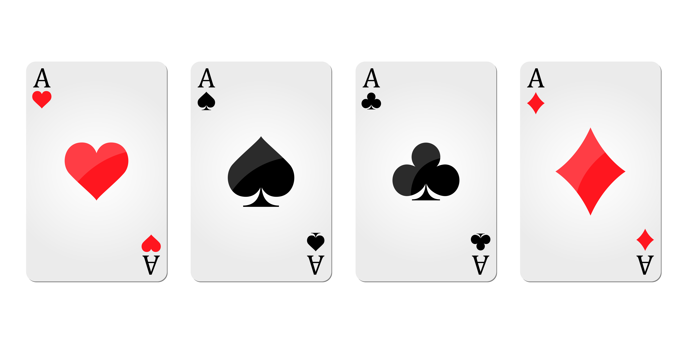

Exam 2 - 02 - Probability Theory
Extension of the analysis from Finite Probability.

Finite probability is a branch of discrete mathematics concerned with the analysis and computation of probabilities when the sample space has a finite number of possible outcomes. It lays the groundwork for comprehending uncertainty and unpredictability in computer science applications. The main concepts of finite probability are experiments, sample space, and events in which the calculation of these results in the probability measure p(E) (How likely the event in the sample space will happen.) There are multiple applications of finite probability starting from statistics up to biology and computer science. How likely an event appears in an experiment is the main topic for every probability including finite probability.
Applications of finite probability are used in:
- Algorithms analysis
- Machine learning
- Cryptography
- Network Analysis
- Games and Entertainment

Example 2.1.1 - Lottery : In a lottery, players win the prize when they pick four digits that match in the correct order, where four digits are selected by a random mechanical process. What is the probability that a player wins the prize?
Solution:
There is only one way to choose all four digits correctly, so | E |=1. By the product rule, there are 10^4 = 10,000 ways to choose four digits (there are 10 digits to choose from 0 to 9),
|S|=10,000.
Hence, the probability that a player wins the large prize is 1/10,000 = 0.0001
Example 2.1.2 - Poker: What is the probability that a five-card poker hand contains exactly one ace?
Solution:
| S | = C(52,5) = 2,598,960 to choose 5 cards in a deck.
C(4,1) to choose an ace card from 4 different suits (hearts, clubs, etc.)
We still need to pick the rest of the 4 cards for our hand from the 48 cards left to choose,
Therefore | E | = 4 * C(48,4)
P(E) = 4 * C(48/4) / C(52,5) = 778,320 / 2,598,960 = 3243/ 10829 or 0.299
Finite probability applies the concepts of the previous topics of permutations, combinations, and the basics of counting. In this lesson, theorems in applying permutation and combination to find the probability of an event happening in relation to all the possible events. Starting from the first and second theorems, it is quite simple to understand and apply. The challenge in this topic is how to find what is being found in the question. At most times I know what theorems to use but don’t know what are the given parameters and how finding the likelihood of one event from happening affects the original given. Like how choosing one card from a deck affects the other probabilities since a card is now missing. Bit strings and arrangement of letters were the ones I found most difficult. Despite the difficulties, I have understood the basic theorems of finite probability here. It solidified my understanding of the usage of the basics of counting as well as permutations and combinations.
Extension of the analysis from Finite Probability.
Describes the probability of an event happening, based on some prior knowledge of related conditions to the event.
King Igmedio Nicolai N. Behimino
(Shortcut: King N. Behimino)